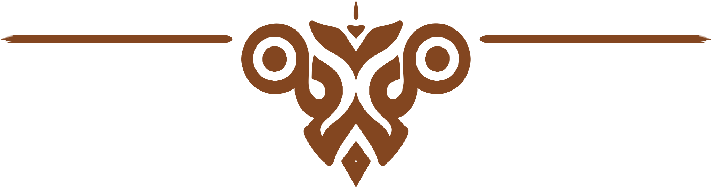

Merkstandaard — augustus 2026
De QR-standaard
Één A4-blad dat op tafel, aan het raam en in de zaak hetzelfde werkt: vier QR-codes in het sierkader van Tajine2Go.

Het blad
A4, twee kaders in elkaar
210 × 297Bladformaat in millimeter, staand.
190 mmBuitenkader, ingezet op 20 mm van de rand.
152 mmBinnenkader; de ring ertussen blijft leeg papier.


Opbouw
Drie delen, nooit een hertekende boog
BovendeelDe boog. Vaste hoogte, schaalt alleen mee in breedte.MiddenstukHerhaalt verticaal. Zo wordt het kader hoger zonder vervorming.
VoetRechte afsluiting, symmetrisch met de boog erboven.
Inhoud
Vier codes, elk in een eigen nis

 QR volgtQR volgtQR volgt
QR volgtQR volgtQR volgt
Drukwerk
Vaste maten voor de drukker
14 mmBreedte van elke QR-nis, met de code op 7,2 mm.
30,4 mmLogo bovenaan, gecentreerd in het binnenkader.
5,6 / 5 ptLabels en waarden onder de codes.
4 kleurenPapier, inkt, espresso en merkoranje. Geen vijfde.
Nog te doen
Wat er nog moet komen
1De QR-codes voor Instagram, Facebook en Google review, aangeleverd als SVG. Codes worden altijd exact overgenomen, nooit nagemaakt.
2Het zellige-patroon als vector, zodat het raster-PNG kan verdwijnen.
3Definitieve iconen voor Instagram, Facebook en de sterren; nu staan er tijdelijke.